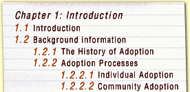
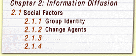

Dissertation and Thesis
Questions about Writing a Dissertation
For completing an M- or D-, please see: Dissertation Requirements
See also the second page for Dissertation or Thesis: FAQ 2
Apparently, I have to write a research proposal. What do I need to do?
The main purpose of a research proposal is to show that the problem you propose to investigate is significant enough to warrant the investigation, the method you plan to use is suitable and feasible, and the results are likely to prove fruitful and will make an original contribution. In short, what you are answering is 'will it work?'
The level of sophistication or amount of detail included in your proposal will depend on the stage you are at with your PhD and the requirements of your faculty and University.
In initial stages, the document you need to write will probably be three to ten pages long. It will give a general idea of what you are proposing to do but it isn't a binding contract. Often it serves as a starting point for discussions with your supervisor to firm up the topic, methodology and mechanics of your research.
Some of you will be required to write a proposal at the time of confirming your candidature (usually at the end of the first year). In some instances, this is a document of four to five pages and may be viewed as a mere formality. In other cases a much more substantial document of 30 — 40 pages is expected. Therefore it is essential for you to check the requirements with your faculty.
Regardless of the above distinctions you should never see writing a proposal as a worthless chore. Indeed, it is a very good idea to write a proposal anyway. You should use it to your advantage. It always forces you to think about your topic, to see the scope of your research, and to review the suitability of your methodology. Having something in writing also gives an opportunity to your supervisor to judge the feasibility of the project (whether it is possible to finish in time, costs, the equipment needed and other practicalities, time needed for supervision), to assess its likelihood of success, and its ability to meet the academic standard required of a dissertation or thesis.
While there are no hard and fast rules governing the structure of a proposal, a typical one would include: aims and objectives, significance, review of previous research in the area showing the need for conducting the proposed research, proposed methods, expected outcomes and their importance. In experimentally based research it often includes detailed requirements for equipment, materials, field trips, technical assistance and an estimation of the costs. It could also include an approximate time by which each stage is to be completed.
I've gathered lots of data, finished the experiments, explored the literature. What do I do with it now and how do I put it together?
It's certainly a good feeling to have so much 'in the bag'. But there is also a temptation now to think that it's just a matter of assembling it. However, your data are of no real use alone. Their value is only in how they can answer your research question, and demonstrate the significance of your work and the contribution it makes to knowledge in your discipline. So
The first thing is to revisit your initial research question. Then stand back and think what it is you've actually discovered (often it is useful to write a few paragraphs to pin this down) and start to think how you would answer this question using your data. Although you may have gathered your data in various ways at different times — for example, through different experiments, questionnaires, interviews, the literature — this is the place to combine and integrate it all in the best way to make your point and answer your question.
If you cannot see how the material you've gathered helps you to answer your question, then one way to see the thread is to tell yourself a story about it. For example:
Story of a Thesis
- Once upon a time researchers believed that ... (literature review).
- But then I thought that maybe ... (aims),
- so, what I did was ... (method),
- and I've discovered that ... (findings),
- which changed the way we ... (contribution to knowledge).
Often your question now seems inadequate to express what it is you've found and, at the very least, you need to sharpen its focus. Or you may find you've only answered part of the original question. You need to decide whether you are going to answer the rest, i.e. gather more material, or whether you will reformulate and limit the question. Sometimes you need to process the data from many different angles to fully exploit the potential — there could be hidden surprises; but also sometimes it becomes apparent that some of your data are irrelevant and, even though it's painful, you may have to discard some of it.
Once you have sharpened your research question, you have a clear picture of what you've found and its significance, you can put it together in a story, your next consideration is how best to present it to do justice to your thesis argument or overall theme.
How you are going to present your discoveries in detail (which may even involve tables, graphs, diagrams, photos) requires a lot of thought and some trial and error. Here your possible alternative ideas need to be discussed with your supervisor. It's mostly through face-to-face discussion that such things get resolved.
I have made several attempts at beginning to write my literature review but I keep changing it. Is there a 'correct' or proper way to organize it?
The literature review is very often, apart from the initial proposal, the first substantial piece of writing that you are asked to do. For this reason alone, it is not surprising you may need to try several possible arrangements of it.
Focusing the Literature Review
During the course of research and writing a PhD thesis, you most likely will write the literature review more than once. As part of the process of trying to formulate their topic, some students write a kind of literature review which is often more like a survey. This could become more focussed as part of a proposal. Usually, once you start to work on your own research, the literature review takes a back seat, though you should systematically keep abreast of new developments in your field.
Then, once you are finally 'writing up', the literature review needs either a major revision, or has to be tackled properly for the first time. Understandably, it is only now after one or two years of close work, that the significance of some of the literature you've glossed over earlier might strike you. You are now better equipped to appreciate it and to review it critically. Also, your research findings could well mean that you need to explore parts of literature that did not initially seem to you to be of direct relevance. Of course, the opposite also happens and perhaps you will decide to exclude whole areas of literature now marginal to your research.
Organizing the Literature Review
The literature review is not an add-on but is absolutely integral to the whole work. So, it should be written in such a way that, in the first place, within the context of the field, it should set up the reader's expectations of where your work fits; it should provide the justification of why you are doing what you are doing; if necessary, it should also establish your theoretical framework and your methodology. A chronological organization therefore, although it may first suggest itself, is not usually the best way to achieve this. It is more important to isolate the issues and highlight the findings that are relevant to what you are doing. To get back to the question, then, the 'correct or proper way' to organize your literature review is the way you can best fulfil these needs.
Since there is no general standard or correct structure, you have to try several possible arrangements to organise it best. It is of course frustrating and time consuming to write the whole literature review several times to see which way serves your purposes the best, but there are some ways that can help you decide on the possible arrangement. Working with a diagram, concept map, or some kind of shorter 'story' (which is more than an outline) will capture the logic of your proposed organization and therefore allow you to choose the clearest way before you write. Plotting out possible structures in this way also gives you something concrete to discuss with your supervisor or test on other readers.
Here is an example of using a story to plot the flow of ideas:
Two areas of research are relevant to the research presented in this thesis:
A and B.
I will first review the literature reporting research into x within A since it is directly relevant to my work. Here I will discuss approaches used to investigate x showing that the ways in which x is conceptualized can be elicited in many ways. I will show that they all give us descriptions of conceptualization of x and assume that the different ways in which x is conceptualized result in different (but congruent with these conceptualizations) practices.
Then I will show that the link between conception and practice has not been proven within this stream of research, although some attempts have been made. I will then talk about attempts to investigate this link (starting with S's study) and analyse the weaknesses of these approaches
While there is no correct way to organize the literature review in the sense of there being a recipe to follow, the ingredients we discussed above have to be there. Also, there may well be a best arrangement to serve the needs of your thesis. The literature review is so important to the whole work, it is worth your best efforts.
Each time I finish a chapter or major section I say 'great'. But how can I make myself start again and get on with the next part?
Let's begin with what could be a simple answer. It's a good idea not to finish at the point where you have to begin a whole section or chapter from 'scratch'. At the very least, ask yourself "What next?" and jot down a few clues about where and how you go on. Often, to be able to start again, you sometimes just need something to start with.
At the end of a chapter or section, it is often necessary to step back and ask yourself what you've done and where it's leading. Certainly before you begin any section you need to know what the main points are you will be making and jot them down, talk yourself through it, draw a diagram or concept map. You could take something as simple as:
And then you unpack the categories, perhaps again by a diagram, issue tree or map.
What we need to remember is that, even though writing is linear, thinking is not. You need to have an intermediate stage where you capture your ideas in a visual form before you go on.
Every time you start writing, especially at the beginning of a chapter or section, you need to pick up the threads of where you were. Therefore, it's also a good idea to read it to get yourself into it.
If this doesn't work, then it may well be that the next chapter or section is not the best thing to move on to. You could, for example, write a very rough draft of a later section. Once you have a better idea of what you want or need to say after that point, you will probably have a better idea of how you must progress from there.
The one thing you should never do is to bombard yourself with negative thoughts. You could think about positive outcomes of your work and motivate yourself to start. But you could also try to think about the subject matter and pick up anything that interests you or holds your attention. Follow this first thread and get your thinking back into the thesis again. Finally, if you have an interested listener, it's always helpful to talk to someone else about your project. These ideas may not be as useful as you might like, but then you need a few of these strategies to get yourself started again. There is no single guaranteed way to do it.
Is there a particular thesis structure I have to follow?
The easy answer is 'yes and no'.
There are certain conventions specific to certain disciplines. However, these structures are not imposed on a piece of work. There are logical reasons why there is a conventional way of structuring the thesis, which is after all the account of what you've achieved through your research. Research is of course not conducted in the step-by-step way this structure suggests, but it gives the reader the most accessible way of seeing why this research was done, how it was done and, most importantly, what has been achieved. If you put side by side all the questions you had to answer to finish your research and what is often proposed as a typical structure of a thesis, then you will see the logic of the arrangement. That does not mean, however, that you have to name your chapters in this way. In some disciplines, it very often works out like this; in others, this structure is implied. For example, in many science theses, the following a basic outline of the structure; in many humanities theses, the final structure looks very different, although all of these questions are answered one way or another.
| Question | Answer |
| Why am I doing it? | Introduction, Significance |
| What is known? What is unknown? |
Review of research Identifying gaps |
| What do I hope to discover? | Aims |
| How am I going to discover it? | Methodology |
| What have I found? | Results |
| What does it mean? | Discussion |
| So what? What are the possible applications or recommendations? What contribution does it make to knowledge? What next? |
Conclusions |
Occasionally a thesis is written which does not in any way comply with this structure. Generally the reasons you want to have a recognized, transparent structure are that, to some extent, it is expected and the conventional structure allows readers ready access to the information. If, however, you want to publish a book based on the thesis, it is likely that the structure would need to be altered for the sake of the different genre and audience.
I've spent months trying to formulate my questionnaire to work or to get the research data I need but time is running out. What can I do? Despite good planning, the unexpected happens or things can go wrong.
If what you are trying to do was, in the first place, well-designed and feasible, and you and your supervisor are convinced the project will still work and eventually be finished, . BUT, the data gathering is taking longer to work or you've had difficulty getting information or access to vital sources and materials, and the problem is that you simply need more time, then consult the university regulations to check the procedures and seek an extension now.
If at any time you suspect that, because of similar reasons, your work looks as though it will take longer than originally planned, do signal immediately through the official, interim report processes that there may be difficulties, so that any later request for an extension has a history and therefore has a more convincing basis.
If there were good reasons for attempting what you did, but now it is clear that your project is not possible to complete in the way you first envisaged, then you have to stop now and refocus immediately. For example, a student started with the plan to use a known technique, which had worked successfully in several species, to gather data from another species. There were no indications that this would present any problems, yet it turned out that the known technique didn't work in the species to be studied. The student did in fact push on and develop a successful technique and, since this was such a significant achievement, it became the focus of the thesis. The other aims were achieved too, although not to the extent previously envisaged. This example shows the need to be flexible, to see the new opportunities, and that research cannot always be planned to the last step.
Certainly it is rewarding if the obstacle can become the new focus of your work, but this is not always the case. Sometimes, frustration is due to lack of skills, inappropriate equipment, or the involved university procedures of ordering resources, getting ethical clearance, permission to approach people you need as subjects or who will serve as resources. The most important thing then, of course, is to identify what the problem is. If you need laboratory, computing, library or statistical skills, for example, identify the sources of assistance inside and outside your study centre and discuss this with your supervisor. If getting this help cannot be speeded up, turn your attention to other things and do these in the meantime rather than fuel the frustration.
Do talk to other students, researchers and staff — and not necessarily only to those in your immediate field. They may be able to suggest ways around the problem, have faced and found a way around similar obstacles, or be able to brainstorm with you to expose all elements of the problem. The very act of talking about it often allows you to define the problem in a more succinct way and, by doing this, to solve it or have a better starting point for finding a solution.
I love doing all the research/ interviews but I just can't write about it. How do I overcome writer's block?
The phrase 'writer's block' covers a variety of situations. In our experience, absolute writer's block — that is, where someone literally can't write anything at all, not even a note to a friend or a shopping list, for example — is very rare. Then possibly you need to work individually with someone like a counsellor. In all other cases, committing yourself to write for only fifteen minutes a day is often a starting point. This must be faithfully observed and then extended only slowly.
To overcome 'writer's block, you should look at what is causing it. It could be that:
- considering the whole finished 250 page product paralyses you. Not only do you not write a dissertation or thesis at one go, you seldom do that even with a chapter. Theses are written small section by small section. It is paradoxical in a way; you do need to keep in mind the whole thread of the argument, but at the same time you need to break down the whole thesis into smaller parts and know how they fit together. You then work on these smaller, identified parts. Often when you come across complex ideas and need to make them clear and linked to your argument, you should concentrate your work on just a single paragraph.
- working on a few small parts has fragmented the whole and, in a sense, you've lost a clear concept of the whole. This is true if you find yourself trying to rearrange the pieces in several ways, cutting and pasting, and, although being very busy, you never feel satisfied with the result. It is important to stop being busy and spend time to recover the plot or story for your thesis and rebuild the logical framework. You could write down the main points in your argument — for example the aims, what you did, what you found, what it means — and then fill in from this, as it were, adding the detail to each part, feeding your content more and more into a structure without losing the bigger picture.
- you've been trying to write your thesis in the order in which it will eventually be published. It is often not fruitful to start with the Introduction, which is perhaps what you were attempting. Certainly you do need to have your aims and the general thread in a working form that you relate the rest to. However, depending on the nature of your research, you could find the methods section the easiest to write first because it is descriptive rather than analytical. By writing this first, you gain confidence and in this way you write yourself into writing again.
- you are searching for the 'right way', the one perfect formula, and you are overawed by writing rules. There is no right way or formula —and grammar, punctuation and style can take their turn much later. Don't try to juggle worrying about:
- what it is you are going to say,
- what the reader's needs might be,
- what is the best word to choose,
- whether you have the tense right, and
- when to use the semi-colon
... all in the first draft. Accept the fact that you will be writing several drafts and take the pressure off the first one by concentrating only on your ideas. Even then, you might snatch at bits here and there to get the ideas down on paper and leave the search for the really apt word or the connecting sentence for later. Rewriting is a major part of writing. Allow time for this at a later stage. - you are having trouble with a particular section. If you are aware that, in some way, you're failing to capture in words a particular idea or concept, and, whatever you do, it still eludes you or seems to sound superficial or ordinary, it may help to try to write about why you think it is that you are having difficulty with this. In this way you may actually sort out what is the stumbling block. For example, you may have compressed some aspect which needs to be unpacked or you may be actually missing some crucial element of the idea which you need to discover before you can continue. Sometimes, the linear nature of writing masks a non-linear network of ideas. If this is the case, you could attempt to present this to yourself visually in a concept map or diagram and then write from this. One last thought is that talking it out with a friend can help you identify where the difficulty lies.
Writing is a complex and slow process. Expecting it to flow effortlessly because you are writing about something you know and understand well and for which you have done the work is a mistake. This kind of mistaken belief can rob you of your confidence which, in turn, further turns you off from writing and compounds the cycle. However, it is also true that you can be a brilliant researcher but, if you don't communicate what you have done to other people, then you may as well have been doing it for nothing.
If you are moving from the stage of doing mainly research to concentrating on writing, you may need to develop a new routine. Some professional writers set up definite daily routines to achieve their writing aims. In the same way you could plan to write at a particular time of the day for a particular length or time or word limit. On some days, nothing seems to help and this may be a time to take an afternoon off and enjoy yourself without feeling too much guilt. A break like this could help you to refocus and start afresh the next day.
How do I know if I have done enough, or if my work is good enough for a PhD?
This could be best answered if you take a comparative stance. Try to look at your research results and see how their significance compares with other work in the same field. Try to publish, present papers at conferences, and discuss your work in as many spheres as possible to get feedback. Making your work accessible to other researchers and also finding out about other people's work in progress is important. Familiarity with a range of types of studies better allows you to gauge the standard of your own work.
Of course you rely on your supervisor to a considerable extent. One of the roles of your supervisor is to be able to judge and advise on the quality of your work. Your supervisor could be sure your work is good enough for a PhD but thinks this is self evident and just doesn't mention it to you. Perhaps you need to discuss it. Occasionally a supervisor becomes as enmeshed in your work as you do and may not have enough distance from which to judge it objectively. Indeed, the supervisor's enthusiasm sometimes causes him or her to urge you to do more and more — which may be nice but not necessary. Maybe you both need to discuss it with an impartial person or persons.
Whereas some students express this doubt in terms of quantity, in our experience, this question really taps the issue of original contribution, academic standards and scholarship. If these are the focus, then 'enough' in terms of evidence will be addressed. Concerns of outright thesis length, however, do arise and institutional guidelines often give an upper rather than a minimum page limit. For example, the University of Queensland rules state that "the thesis should not be unnecessarily long. Although length may vary according to the topic and the discipline, a thesis is expected to be no more than 100,000 words or 400 pages, including maps and diagrams, but excluding bibliography."
My topic is really interesting but it isn't something that can be squeezed easily into two years. How do I handle it?
The first thing you should ask yourself is why you think that two years is not enough. If it is just a vague feeling you have, do set your mind at rest by looking into it thoroughly.
You need to look at your topic to examine its scope and determine what's involved in investigating it. For example, if it involves experiments, how many would you have to perform and how long is it reasonable for each to take? If it is a qualitative study, how many respondents do you plan to interview, what other documents or sources do you need to access? You could also think about similar studies done before and compare the scope of your work with that of other studies. You should, of course, also talk with your supervisor. It may be that you are underestimating yourself or overestimating the topic.
One of the things we find is that many students talk in very broad terms about the topic they propose to research. This could be what is causing your difficulty. Even if this global topic stays as your official topic, you need to pull it apart, unpack it, and generate questions around it. By doing this you can appreciate the full extent of the topic. After this, you could well convince yourself that your topic is manageable within two years. Or you could decide that one particular part of it will stand alone and be really worth doing. You have to take the risk, of course, that once you have started asking questions about it, there is always the chance that you will discover that it doesn't have much potential.
Out of this soul-searching you must come up with a well-defined, worthwhile topic because only then can you and your supervisor decide whether or not it can be done in a reasonable time.
If you fail to resolve the question of whether or not it can be done in time, you will probably lack commitment to your project. And lack of commitment is counterproductive and undermining, — it dampens your enthusiasm and motivation, and gives you all sorts of excuses for not getting on with it.
Lots of problems have come up along the way and I don't think I'm going to get it done in time. Is there any way to get an extension?
Throughout the long process of doing a Masters or a PhD, especially if you are a part time student, it is impossible to avoid problems completely. Although universities are tightening their rules about terms of candidature, most universities are realistic about the need for extensions. However, you need reasonable grounds on which to ask for an extension and often you will need to provide some evidence, for example, medical evidence, or the background of having alerted your supervisor or others to the problems when they arose. You may also be asked to commit yourself to an absolute completion date. If this is not feasible, you could explore the option of whether your institution would allow a deferment in your candidature.
Remember that the university's rules and the sponsor's rules are not the same. If you hold a scholarship you would also have to look at the conditions and see whether they allow for an extension. In any case, you need to consider the financial implications of any extension.
I am three quarters of the way through but it isn't as fruitful as I thought it would be. How am I going to rescue my thesis?
What has led you to believe this is so? Is it your own opinion or do you have some outside evidence? For example, has your supervisor expressed concern that the topic is not working out as well as you both thought it should? Is it because you are reading published material in this area and going to conferences and you've discovered others are doing work in the same field which seems much more important?
In other words, you need to make sure your impression is more than just the usual doldrums of the middle years of being a doctoral student. Sometimes we begin a PhD wanting to excite the world but, when we get down to it, what we actually do is, like most things, 90 percent routine and our results appear very pedestrian to us. What you're working on and have now achieved becomes so familiar and simple to you that you start assuming that everyone knows it. This could lead you to underestimate the value of your work.
Sometimes it is a matter of looking at the results in a different way and possibly finding another way of exploring or packaging what you've found to underscore its significance.
However it is possible that indeed there isn't enough in your results. You and your supervisor then have to look at it from all angles. Work out if it is just a case where more research is needed in the same area to give it depth. Perhaps you even have to discard some aspects of the topic and to focus and concentrate on a more specific area. This could, of course, require further reading, planning or experiments.
Or perhaps you need to broaden the scope. In this case, you might reconsider some of the aspects you originally discarded which are related. For example, one student experimenting with a simple treatment for a common plant poisoning in animals found this treatment not to be as useful as anticipated and therefore she devised investigations of other treatments. In the course of this, she also found that there were crucial details of the signs not previously written up. It is often useful to cast the net a bit wider to give your argument further support, or a comparative focus, for example. The caution here is that you must remember the whole thesis has to be unified and not a loose collection of bits and pieces.
It could be a good idea for you to recall why you thought it was a worthwhile project in the first place and revisit the literature which led you to believe this line of enquiry would be fruitful. Perhaps then a major contribution of your work might be to offer a more thorough critical analysis of this very literature and use your results as evidence to argue that the approach or line of enquiry suggested in the literature yields little. For example, your empirical research could reveal the flaws in a particular model or theoretical framework you've adopted.
So, changing the focus by narrowing, broadening, foregrounding the marginal, re-examining the results, or by changing the emphasis from results to the theory could all rescue, and even improve, your thesis.
Now I see how I should have done it all along. Is it too late to change?
Almost everyone who has finished a PhD would say that it was only when they had finished that they really saw how it should have been done. If this is what you're feeling, but have sufficient evidence to know that the work is good enough as it is, don't worry. All the insights you gain doing your PhD research don't have to be used to improve this particular work. You will use this knowledge, skills and experience in your future work.
The important questions to answer are: how crucial is the change you're thinking about? And, what are the consequences of not making such changes? If not making the change means that it is doubtful whether your work will be of acceptable standard, then no matter at what stage of your research you're at, or how much work is involved in the change, you have to make that change. Since this is such an important and profound decision you shouldn't make it alone; therefore discuss it fully with your supervisor. Of course any change will lead you to consideration of other constraints, such as time, cost, and your own financial situation. If on the other hand the gains are slight but the proposed change would involve a lot of work, then maybe you should accept the work as it stands.
Sometimes the change you are contemplating will have a major impact, even to the point of overturning your original stance, and yet it will not necessarily involve an excessive amount of work. The work is in the thinking and re-conceptualizing. This is probably worth doing.
It is almost always possible to find ways of improving your work, and up to a point this is a necessary part of reviewing, re-examining, redrafting your thesis. However avoid being sucked into an endless process of making minor changes for only small gain when your PhD thesis has reached the point when it should be submitted. It could just be reluctance to let go and face what happens next.
Is it really necessary to publish while doing a PhD?
There is no simple answer to this question. It is safe to say that we cannot think of any reason for not publishing but, when thinking if you should, let's consider the reasons for wanting to.
- If you are working on a topic which is hot and you know that many people are also researching it, it is important for you to stake your territory and start to establish a reputation in the field.
- Also, in fast developing areas such as computer science, it is of course vital to publish your results, since waiting until you have finished the whole thesis may render them obsolete. (Check whether your university will accept as a PhD thesis a series of articles published during your candidature.)
- Publishing will help you to judge whether your work is of a high enough academic standard, or contains an original contribution to knowledge — two concerns often raised by PhD students.
- Having to publish forces decisions about handling data and helps you organize yourself by providing an interim deadline.
So writing a seminar or conference paper or an article for publication could be a very good idea. It gives you an opportunity to practise your academic writing. It exposes you to critical assessment of your work. And it gives you the psychological boost of knowing that you are achieving something worthwhile.
However, the design and structure of your work may mean that isolating a discrete, publishable part is not possible. For example, it may not be until the end of your research that the value of the work can be shown. In this situation you mustn't feel pressured to publish. But you would be wise to find alternative forums for presenting your work to your peers such as at seminars, conferences and the like.
Of course, time constraints will also govern your decision to publish. In addition you have to weigh the risks of rejection against the benefits of publication. These issues and also questions of where to publish and the protocol of possible joint authorship should be discussed with your supervisor.
What can I expect from my supervisor and what does my supervisor expect from me?
Working on an understanding of mutual expectations with your supervisor is an essential part of developing a good working relationship. Do this at the beginning. Some students have no idea what is reasonable to expect while others have what can only be called a wish list. What actually is the truth varies between supervisors and departments. However, expectations can be discussed under several broad headings.
- Practicalities: This includes such things as: provision of desk or room, equipment, computer facilities, conference funding, photocopying, secretarial or laboratory assistance. While important, these are easy to sort out. Most departments provide some support in this area and information is usually listed in departmental handbooks, publications for postgraduate students, or available from administrative officers or your supervisor.
- Intellectual support: You could reasonably expect what can be termed 'quality assurance. By that we mean that your supervisor would probably have experience at both supervising and examining PhD students. This means she or he knows what standard your thesis should meet and can assess the feasibility of your plans. Your supervisor can also play the role of sounding board for your ideas. In initial stages this involves helping you find your way through the literature, guidance in topic formulation, help with research design, and robust comment on appropriate writing style. In later stages this support can change to become more of a discussion of your ideas, results, and theoretical framework. The relationship is often presented as one changing from that of master-apprentice to one of colleagues. In reality, the way it starts is often the way it finishes. A more satisfying relationship is one where both parties acknowledge from the start that they are potential colleagues.
- Emotional support: It is reasonable to expect that, while taking a needed critical approach to your work, your supervisor would nevertheless encourage you in your endeavours. A good supervisor would be expected to create an atmosphere where you are not frightened of asking questions, where you don't feel you have to be brilliant all the time, and in which you can even occasionally expose your ignorance. You need to feel safe. It is useful to remember that, at this stage of your academic life, your supervisor is not your assessor but someone who is in your corner. Your success is also his or her success.
The framework in which this support happens varies but what you would expect is to have frequent, dedicated meetings with your supervisor. These are reasonable expectations but they do have to be negotiated and formally set up right from the beginning and then reviewed as needs change.
The other side of the coin is that your supervisor has reasonable expectations of you. These would include:
- that you are academically competent, can handle the theories and major concepts in your area, but will acknowledge and work on any weaknesses or acquire any necessary technical or research skills;
- that you are able to express yourself both orally and in writing. Remember, although part of your supervisor's role is to guide you in the use of appropriate discipline-specific language conventions, writing is still your responsibility.
- that you keep your supervisor informed about the progress of your work and whether you're facing any problems. Too often supervisors say "If only I'd known that (the experiments failed, you've run out of money, broken your leg)".
- that you can organize yourself, meet deadlines, and in general not need to be told what to do and be 'supervised' all the time. But that you will ask for help if you need it.
In other words, you should be able to expect a professional supervisor, and your supervisor should be able to expect you to be professional also. This relationship is so important that it warrants time, thought and energy to keep it working.
When do I start writing?
Many students think there is a right time to start writing. This is not the case — writing happens throughout. But, you need to ensure that it does happen and is focussed on something. In a sense there is writing for doing, writing for thinking, and actually writing the PhD thesis.
The short answer to the above question is that you start writing when you have something to say. For example:
- You have worked out your methodology. This is a good time to write a draft methodology chapter. Remember you will probably need to modify it later but doing it now will help you think it through and spot any gaps or weaknesses. A written section like this also gives you a concrete basis for discussions with your supervisor — to receive feedback and to ensure you are on the same wavelength. In fact, many students find the methods chapter the easiest one to write and that writing it early in the PhD builds confidence to tackle the more demanding sections.
- You've been reading 'around' the topic and are starting to build up a picture of this field of research and where your study fits. It is a good idea at this time to begin writing a preliminary review of the literature.
- Especially if you are establishing and justifying your theoretical framework, it is essential that you write about this and get it read and discussed with your supervisor.
- Somewhere along the way you will start getting a clear picture of the whole thesis, but you can't carry it all in your head. However you can, and need to, carry something shorter — and an abstract is ideal for this. You could see this abstract as a tool to control the flow of ideas throughout your thesis. A well written abstract links in a logical way the reasons for the research, your aims, how you went about achieving them and their significance.
Unless you write something down it is easy to think that you know what you are going to say. We've known students who think that something will be the centre piece of their thesis but, once written, this part turns out to be of only marginal importance. Writing is a test of your understanding and it forms a solid basis for moving forward or revealing the gaps in your work. There is every reason to begin it early.
Sometimes when I'm writing I feel as though I'm saying the same thing over and over.
How can I avoid repetition?
There is overall structural repetition, repetition arising from an inability to come to the point, and repetition of words, phrases and sentences.
Structural Repetition
Structural repetition may be unavoidable: for example, you may need to repeat aspects of your methodology with each group of results. Structural repetition may even be necessary: for example, if you are applying the same analytical framework to different texts, you may need to preserve the same structure to be able to extract the common themes. However, structural repetition may not be serving any purpose and could be disguising similarities and differences in what you are discussing. This is a common problem in any comparison. You need to find the evaluative criteria which are the object of the comparison and then structure your writing around these. Use structural patterns to your advantage to emphasise your point. Often it is only by doing this and seeing what relationships different structures expose, that you fully realise the implications of your analysis. It is only through comparing and contrasting methods, models, and ways of approaching things that you can see the relative strengths and weaknesses of each; that you can see their potential applications and implications.
Not Coming to the Point
Repetition which stems from going around and around the point and never closing in on it is solved by:
stopping,
forgetting what you have written,
asking yourself

then starting afresh from the top.
Sometimes trying to re-work what you've done or adding another explanatory sentence will fail to achieve any more than yet another turn around the general area.
Talking it through with someone else or talking yourself through it will sometimes achieve clarity:
So, what I want to say here is x. I have two points to make. I will first tackle A because it will lead me to B. Once I have done this, I can go on to discuss the implications of both A and B on C. I can link this to my next point by showing that C will etc.
Repetition of Words, Phrases and Sentences
Perhaps the repetition of whole sentences is a consequence of using a computer and the cutting and pasting function. In the most extreme cases, in some theses we read the identical sentences in the Abstract, Introduction, Discussion and Conclusion. Each section deserves to be thought through in its own terms. You may have to search deliberately for different ways of expressing yourself. The writing of the different sections may have spanned months. But the reading will be done in a short time only and the repetition begins to strike a negative note.
Phrases and words may simply be overworked as you become attached to one way of saying something. When you are coming to writing, think about different verbs and linking words and expand your repertoire and make your meaning as explicit as possible. On the other hand, a particular phrase may well be the accepted way of referring to the phenomenon in your discipline. Jargon and the particular conventions for using terms have to be retained because they are usually well-defined and enhance communication among scholars. Departure from these terms could make readers believe you are talking about something else and it could lead to misunderstanding.
There is no virtue in change for the sake of novelty. Always select the form to support your meaning. If you need a parallel structure to support a parallel meaning, then use it. For example, if you have a series of sentences in a paragraph beginning the same way, this is fine if each is an instance of the same kind of thing. To change one would break the rhythm of the paragraph and destroy the unity of the idea.
Of course, restatement of a difficult idea has a proper place in your writing. This is not the same as repetition but rather is helpful to the reader. Usually you would introduce a restatement with a marker phrase such as :
"In other words", "Put another way".
I have difficulty showing whether it's my idea or someone else's.
Do you have ways to help with this?
Some of the standard practices for referencing can indeed obscure whose idea something is. Also, some students' modesty or even their anxiety to avoid using the first person means they bury their own ideas. A clear declaration usually indicates that that the point you are making is what you, the author, believe and there is no need to preface it with "I believe that". However, sometimes a statement of opinion is ambiguous, especially if there is a reference near it to the literature.
Often, a good idea is to put the name of the author you are discussing or, in particular, evaluating in your text, not just in brackets at the end of the sentence or paragraph. You can then indicate much more clearly what that person has devised, argued, proved, criticised, postulated, or overlooked. These and other strong verbs, for a start, convey your interpretation and assessment of their work. Also, to begin a sentence with words or phrases such as "Clearly, In other words, Indeed, In contrast, Of equal importance" usually signals your voice in summing up, making a judgement, or providing an interpretation.
To illustrate this point, let's work through the following example:
However, by the mid-1970s the optimisation approach was clearly judged to suffer from a number of deficiencies (Baker, 1974; Baker and Freeland. 1975). [The credit for pointing out the deficiencies is only obliquely attributed to Baker and Baker & Freeland.] These deficiencies ranged from problems in methodology to more fundamental concerns with the overall approach. For example, the fundamental inadequacies in data representation, and the lack of explicit recognition and incorporation of experience, knowledge, and non-monetary aspects are some of the objections (Baker, 1976). [Too oblique. Try "Baker (1976) identified the deficiencies as ranging from ] In addition, the data for analysis are usually not available or may be of questionable validity (Dumbleton, 1986). [Same problem!] Furthermore, many models did not consider essential aspects related to R & D decision making. [This sentence looks as though it could be your opinion, but ?] The essential aspects include (a) adequate treatment of risk and uncertainty, (b) the continuous nature of investment in, or expenditure for the projects, ( c) the need for multiple criteria, (d) the interrelationships among projects, (e) the continuous nature of project selection, and (f) the role of experience and intuition in decision making (Lee et al., 1986). Lastly, most of the models did not allow decision makers to have a priority structure associated with the multiple objectives. [Is this your insight?]
To get away from the problems of ambiguity of attribution try rewriting:
However, by the mid-1970s, Baker (1974) and Baker and Freeland (1975) had already judged the overall optimisation approach as well as its methodology to be deficient. Even in 1986, Dumbleton pointed out the still existing problem of the availability and questionable validity of the data. [If the following is what the writer thinks, then it could read as follows.] The critiques of the approach offered still fail to address the neglect by many models to consider essential aspects related to R&D decision making. [If, however, this was Lee et al.'s opinion, then it would need to read as follows.] Lee et al. (1986) pointed out that many models .
An even better way might be to start from the top and introduce the paragraph by giving some overall assessment of the current state and then providing the specific points brought to light:
For a decade since the mid-1970s, researchers have been pointing to a range of deficiencies in the optimisation approach which are still not currently addressed.. Methodological problems were first highlighted by Baker (1974)
If you set out to analyse and assess other people's work and to put it into some framework, then it is much more likely that distinguishing between your opinion and the opinion of others will not be a problem.
Is it necessary to start with a really detailed outline for the thesis?
The answer to this depends on what you mean by a really detailed outline. If you mean that you have a well-worked out argument structure, this is wonderful. If you mean that, for a particular section, you know exactly what steps you need to take, say, for an experiment, then that's also useful. If you mean a plan of action where each part is directly aimed at achieving your objective and this relationship is evident, then this too is of great help. And, at a later stage, a comprehensive yet still flexible outline of what is going to be included in each chapter, and which comes out of the structure of your argument as a whole, is of great help in that it allows you to foreground just one section, that is a do-able bit, and write that, knowing where it fits.
However, we see some students in the earlier stages of doing a PhD who produce, often with a flourish, a very detailed outline, down to every last sub-sub-section:



Perhaps there is not much wrong with this as a Table of Contents. But as an outline of what you're going to do, it serves no purpose. Students who produce such an outline could still finish up with a brilliant thesis, especially if all the links and the reasoning are in the head. However, unfortunately, such an outline doesn't tell anyone what has led to this proposed research, why it's important and how the various parts indicated in the outline are related. It is not a document someone can work from or offer you useful feedback on. We usually find that students who produce something like this as a starting point have the concept of their thesis project as a formulaic set of necessary steps. Sometimes they have adopted an outline from a thesis done previously in their department. At this early stage students are understandably often so caught up in the content, they do not see the necessity to have an overall idea of where the study is going.
Often a very detailed outline of the table-of-contents type can delude you into thinking you have accomplished something. It can, to the contrary, actually imprison you and restrict the room for creative thinking. It blocks the necessary questioning processes: revisiting the topic, reassessing the direction your thesis is taking, and seeing how you would structure your argument.
I've got an area I'm really interested in but how can I go about actually trying to pin it down to something more specific?
Often we find students can't pin down what they really are going to do because they always think about the area of research as the content they want to research. They think about a topic, that is the subject matter of their enquiry. For example, a student would say he or she wants to do a PhD on adoption of new agricultural techniques. To pin down this topic, we have to start to think about what problems are associated with adoption of new agricultural techniques — how can they be solved? what outcomes do we want? From whose perspective are we dealing with this topic? We have to search for what problems lie within the topic.
So, a good idea would be to write down the broad topic of what it is you want to investigate. Use this as a stimulus to begin a recursive process of questioning, expanding, exploring, excluding then back to questioning to get at the problems, investigate all possible angles and their probable feasibility. You have to start seeing relationships between sub-areas of the topic. It is by investigating relationships between things that you find solutions. This gets you away from describing content which can keep the thinking either at a very global or a very detailed, specific level without ever formulating problems for investigation, or thinking how the known information can be used to solve new problems, or indeed to see what new information or methods are needed to solve the problem.
Certainly, at the level of being interested in a broad area, the literature will pull you in many directions. In a sense, the need is to read in order to discard. But the decision to discard rests with the answers to the questions generated.
It is necessary to ask questions continually around the general area and then again at each stage as what you are pursuing becomes more specific. Questions, for example, include the basic types, plus more specific probing. For example:
- why is it interesting or important?
- what are the elements/factors/issues involved?
- what do you think are the contributory causes?
- what do you think it would solve?
- what is its purpose?
- can it be formalised?
- what has been done in the past?
- what does the history of this show?
- how is it known?
- what other examples are there of this kind of thing happening?
- is it something new, or has it evolved from something else?
It is very important at this stage to discuss your ideas with as many people as possible, and certainly with your supervisor. Discussion with others provides a mechanism for pinning down what it is you want as others will question you, add their ideas, and so on. The supervisor will know the field so he or she could help to sift ideas, know if there is anything new in your topic, and have some preliminary ideas about the feasibility of the more specific options your exploration will get you to.
How do I handle disagreements with my supervisor?
Disagreements are almost bound to happen in a relationship that lasts for three or more years. These disagreements arise in any area and differ in their degree of severity. What may seem to be the end of the universe to you may be perceived as only a minor hitch to your supervisor. Conversely, you may be going along happily while your supervisor seethes. More likely, however, you are both aware of a problem. Regardless of the situation it is always disruptive and can slow, or even halt, your progress. Whatever the problem, if you are sure that you haven't misinterpreted the situation, the first thing is to do something about it.
Here is a common situation and a possible way you could handle this and similar disagreements.
The supervisor says that you don't have enough and you need to do a few more experiments. You don't agree because you feel that you definitely have enough and you're aware of time passing.
You don't agree because you feel that you definitely have enough and you're aware of time passing.You have two options. You can decide to handle the disagreement on the spot or you could give yourself time to think about it.
Time to think and react.
You tell your supervisor that you need to think about it. This gives you time to think about what the supervisor said, to overcome your emotional response, and to prepare a comprehensive answer. It could even be helpful to write down your thoughts. There could be several possible outcomes of your next meeting with your supervisor:
- after a thorough discussion, your supervisor accepts your point of view.
- or you reach a compromise. You agree to do some but not all of what was originally asked of you to ensure your thesis reaches the required standards.
- or you reach total deadlock. From here you may decide that, even though you disagree, you will do what is asked because it is a trade off to preserve your relationship and to finish without too many hassles. Or you decide your reasons are strong enough and you don't want to give in. If further discussion doesn't resolve the situation it may be helpful to talk to someone else such as a fellow researcher, learning adviser, student union representative for postgraduates, or counsellor.
If, as a result of all this discussion, you modify your position you should feel comfortable to return to your supervisor and talk it over again. It could be that your supervisor has been rethinking too. A new solution is found. On the other hand the deadlock persists and maybe now is the time to talk to the head of the department and even consider changing supervisors. It has to be remembered that this is a last resort and must be carefully considered.
Certainly disagreements can be uncomfortable. However it is very often the case that disagreements force a rethinking. This can improve the thesis — and indeed the relationship with the supervisor. It is important to remember at all stages of any disagreement with your supervisor to try to keep communication going.
Every university has an established procedure for dealing with grievances and problems that may occur during your candidature. Consult official university handbooks, postgraduate organisations, postgraduate student organiser, faculty committees on postgraduate students and student advisers if necessary.
Why am I doing this and how do I keep myself motivated for two years?
Why you are doing a PhD is a question you must make yourself answer honestly, not only when you start, but throughout the degree. Sometimes your long term goals get lost in the day to day activities but sometimes they were never clear in the first place. Also, circumstances can change.
No one, of course, can answer this question for you. However research into completion rates of PhDs shows that those who really want the degree are the most likely to finish. Therefore it would be ideal to have more than one reason to keep you going — you love research and study, you want to have the time and space to explore a topic that has always interested you, you think it's necessary for your career, you see it as a worthwhile challenge.
These reasons start you off. To keep going for two years we see that there are a number of keys to motivation:
- having good reasons for doing it and consciously reminding yourself of them;
- having a topic which 'grabs' you and which works;
- having a rich network of contacts: your supervisor, fellow students, other academics, and of course family and friends;
- having the attitude that you are part of the academic scene, that you belong;
- being organised and feeling in control.
Everyone recognises also that having something successfully completed — be it a seminar paper, section of the thesis, or published article is a great boost and motivator. Therefore, giving yourself do-able, interim goals is a wise strategy.
How is the best way to organise myself to get the whole thing done?
Certainly at the beginning of your enrolment, three and a half years seems like a long time. Likewise, if you are doing a PhD part-time, initially there seems to be plenty of time. However, this time stretches ahead with no externally set interim deadlines. It is up to you to give it a structure.
Time
It's not easy for you to talk about getting the thesis done if you isolate it from its context. It has to be considered in relation to your whole life and you need to assess realistically how much time you can devote to your PhD work. Most PhD students have many other commitments, including family, friends and full or part time jobs. If you are a full time student, you need to commit yourself to your PhD study as you would to a full time job. If you are a part time student, you have to plan to find the necessary time and be realistic about the time you actually have.
Understand the work entailed in a PhD
Then, to organise how you are going to do your work, you need to know what the work is. First, therefore, you need to have a holistic view of your thesis and know where it is going. Here we assume that you have done the whole intellectual conceptualisation of it and the basic designing of your work. If not, then this is your first task and it's a good idea to give yourself a time limit for it. Once the overall concept is pinned down, this may identify the tasks ahead in fairly specific terms, which is often the case in the sciences. In the humanities, however, this can be more elusive and, indeed, settling on the method of analysis could well be the whole focus of your research. Nevertheless, you do need to identify in broad terms what specific tasks need to be done to get you to where you want to be at the end. Not only do you need to know the sequence of the tasks, you need to know when you are going to do them and how long they are likely to take.
Reaching certain objectives at the end of specified periods
Now that you know where you are going and the broad tasks involved, you need to plan where you will be ideally by the end of each year. Once you have this overall structure, then there is a need to break down the tasks and the time further. For some people, having a vision of what will happen over the next month is enough; others need to plan on a weekly or even daily basis. You have to see what works for you and don't just adopt a plan that works for someone else. For example, if a colleague works every Monday on the Literature Review and analyses data the rest of the time, that might work for that person but be a strange thing for you to do.
Not only does your plan have to work for you and not be someone else's but, even when you have settled on your plan, you need to be flexible enough to change it if it's not working. Don't become a victim of your own plan. Remember, a plan is just another of the tools to help you reach your goal. Some people think they don't need a plan and others spend all of their time planning. Avoid both of these pathologies and find a level and type of planning which suits you and works.
Planning
There are two basic types of plan: one focuses on time and one focuses on things to be done. For example, some people focus on time slots and then allot tasks to available time slots, whereas others operate from 'to do' lists put in order of priority and do the tasks as time becomes available. Within either approach, whatever you plan to do has to be quite specific. For example, 'working on literature review' is too general; rather, have the tasks within this specified: 'compare White's and Brown's views on x' or 'find out what followed from Black's proposed framework for y'. Regardless of style of plan, it still is a good idea to set time limits for tasks as they can stretch and lead you in various interesting but irrelevant directions. It is necessary to review how you are going, to see if you are still 'on task', and, rather than drifting aimlessly, to make a conscious decision about whether what you're doing deserves more attention. At times, it may be beneficial to allow yourself a finite period to browse and just take what happens. If this is part of the plan, then there's no guilt!
To avoid burnout, you need to build into your plan rest, recreation, fun, spare time and even 'catch up' time. As with most things, planning involves trial and error. You are unlikely to get it right the first time. You need to think about what worked and what didn't work for you, modify your plan, trial it again, and continue the process. And, of course, circumstances change through transition to another stage of your work or because of events in your life. Your plan will have to change too.
Why do I have to have a literature review?
This is an important question to ask yourself. As well as helping you to write a good literature review, fully understanding the need for such work is what allows you to know you're on-track, why what you're doing is worthwhile, and that you do have a contribution to make. In other words, the literature review is integral to the whole thesis; it is not just a routine step taken to fulfil formal requirements.
You need a good literature review because it:
- demonstrates that you know the field. This means more than reporting what you've read and understood. Instead, you need to read it critically and to write in such a way that shows you have a feel for the area; you know what the most important issues are and their relevance to your work, you know the controversies, you know what's neglected, you have the anticipation of where it's being taken. All this would allow you to map the field and position your research within the context.
- justifies the reason for your research. This is closely connected with demonstrating that you know the field. It is the knowledge of your field which allows you to identify the gap which your research could fill. However, it is not enough to find a gap. You have also to be able to convince your reader that what you are doing is important and needs to be done.
- allows you to establish your theoretical framework and methodological focus. Even if you are proposing a new theory or a new method, you are doing so in relation to what has been done.
The literature review becomes your springboard for the whole thesis.
What style of writing is expected?
It is a purposeful kind of writing which is to be
- well argued;
- well supported by evidence;
- well documented.
A straightforward style — neither informal and chatty, nor stuffy and pompous — is what to aim for. Use clear and unadorned English appropriate for your audience. Therefore, use the jargon of your discipline when it serves your purpose. Don't, however, build a smokescreen of impressive sounding phrases to mask what it is you are saying.
You know from your own experience that very complex ideas in your own field can be and are expressed very clearly by good scholars in your discipline. While you are reading for your research, take note of particularly well written articles. But also be aware of the kind of writing which frustrates you as a reader and obscures the point.
You need to be aware of who it is you are writing for. You are not writing for your supervisor, who knows precisely what you are doing, but for someone who may need to be reminded of some background and who, at the very least, needs you to signpost the importance of the various parts.
You also need to think about what it is you are actually doing; are you describing something, analysing something, explaining something, arguing the point, giving examples, evaluating or assessing the value of other arguments or the sufficiency of evidence? What you are doing affects the language you use. In particular, the verbs you use need attention because they convey your attitude. In our experience, very often students don't exploit verbs fully, relying on just one or two favourites (for example 'mentions', 'states', 'suggests', 'discusses') or overworking the weaker verbs ('have', 'be'). However, verbs such as 'judges', 'postulates', 'excludes', 'convinces', 'confuses', 'questions', 'advances (the argument)', 'verifies', provide a stronger interpretation of your reading, understanding, and opinion of the research.
Apart from questions of who your reader is and what it is you are doing, matters of style need to be considered. We have taken the three we find most commonly asked about:
Use of the personal pronoun.
For some disciplines, the demands of objectivity mean that the use of 'I' is frowned upon. Of course not using 'I' does not ensure the objectivity of the work; nor does its use shatter objectivity. Acceptance of the use of the personal pronoun has become more common in some disciplines. Even if 'I' is acceptable, however, its use has to be controlled as you yourself are not the subject of the thesis. Therefore, regardless of the practice, there will necessarily be large parts of the thesis in which the problem never arises. We would advise to check with your department or supervisor and take your cue from publications and theses in your academic area. If you do decide to avoid the use of 'I' at all, don't substitute 'we' and don't move into pompous circumlocutions such as 'the author'. Whatever your decision about this issue, be consistent in your usage.
Active vs passive voice.
Both active and passive voice should be used — where appropriate. (OrYou should use, where appropriate, both active and passive voice!) As a general rule, use active voice unless there is good reason not to. For example, if "The results support the theory" is the active, and the passive is "The theory is supported by the results", then we would select one or the other version depending on whether we were stressing the results or the theory, or if we wanted to manipulate the sentence for it to finish with one or the other in order to link it to what followed. Otherwise, choose the active as more direct. This is a very simple example, of course, and the distancing effect of the passive here is not great. However, in more complex examples, and also where a series of passives piles up the reader fights unnecessary obstacles.
The use of tenses.
Many students have come to us clinging to an absolute dictum about what tense to use. Their beliefs seem to divide equally between total dedication to the use of the present and total dedication to the use of the past. In truth, it is the rules which cause the problem. The tense that suits your purpose is the tense you use. Clearly, an event, be it a survey, an experiment, a study of some kind, done by other researchers or by you, has to be in the past and it is usual to use the past tense to describe it. However, the interpretations, evaluations, assessments, discussions, or ideas arising from this mostly still hold and it is usual to talk about them in the present. Even though someone has written an article a decade ago, the article still exists, is currently part of the living knowledge of your discipline, and your reaction to it is happening now. There is even the possibility that you could be predicting something for the future, so the manipulation of time changes again to fit the situation. For example,
Smith (1965) reports a study conducted on bees which used White's (1953) radical artificial insemination technique. These data are still the most convincing to support Brown's (1996) hypothesis that bees would respond well to intensive bee husbandry.
In other words, the goal is to achieve a clear, logical style. Clear writing, however, is usually the result of lots of rewriting and careful attention to what it is you really want to say. Clear writing is not the result of obedience to prescriptive rules. Seldom does clear writing come about in the first or even the second draft. It takes work to remove clutter and to fill missing links but the results make the work worthwhile.
Do I have to act on every bit of feedback I get?
Feedback comes from many sources and its greatest value is that it offers a different perspective from our own. However although we must consider all feedback, this does not mean that we have to suspend our own judgement and blindly follow it. Therefore, when you are confronted with feedback it may be helpful to ask yourself:
- am I sure I understand what the reader is getting at?
- do I think my reader has understood the points I was making?
- do I agree with the feedback? to what extent do I want to follow it?
- why did I do it the way I did it in the first place?
- is it consistent?
Asking yourself these and similar questions allows you to respond to the feedback in a calm and reasoned, rather than emotional, way. You are now in a position to make decisions about how to respond. You might seek and offer clarification on some points. You might decide to make some changes — because of the thinking sparked off by the feedback, or because the reasons given are reasonable. On the other hand, you might consider it and then decide to ignore it. Or if it is important enough, you might wish to discuss it further and justify your stance.
Show the other page for Dissertation or Thesis: FAQ